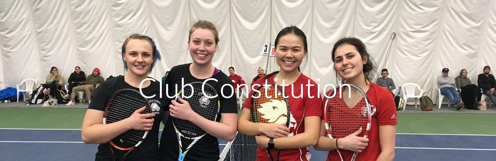

Politique d’Engagement des Joueurs de la Division 1 du Club de Tennis de l’Université d’Ottawa
S’engager dans l’équipe de tennis de la Division 1:
Les joueurs de tennis sélectionnés pour jouer dans la division supérieure, Division 1, de tennis universitaire pour le Club de Tennis de l'Université d'Ottawa (UOTC) sont des joueurs compétitifs, travailleurs et motivés. Les joueurs de tennis qui acceptent ce poste doivent s'engager fortement auprès de l'équipe. Après les essais de l’UOTC, certains joueurs se verront offrir la chance de s'entraîner et de concourir dans l'équipe de Division 1 en fonction de leur niveau de compétence sur le terrain de tennis. Lors des essais, les joueurs seront évalués en fonction de leurs compétences physiques et mentales. L'attitude d'un joueur sur et hors du terrain sera également prise en compte dans cette décision.
Frais de joueur de Division 1:
Les joueurs peuvent accepter ou refuser cette offre pour jouer dans l'équipe de Division 1. Si un joueur décide d'accepter son offre, il doit alors payer une « frais de joueur». Ces frais seront décidés par le Président et Trésorier de l'UTOC en collaboration avec le Rideau Sports Centre, le centre de tennis privé local. Les frais de joueur couvriront les frais des terrains, les déplacements de compétition et les vêtements de ce joueur de Division 1 pour un semestre d'automne ou d'hiver complet.
Chaque joueur doit payer les frais de joueur à temps et conserver un enregistrement électronique ou papier de la transaction. Les frais de joueur sont les mêmes pour tous les joueurs quelle que soit leur capacité de tennis. Cependant, le coût peut varier par semestre en fonction des modifications apportées par le Rideau Sports Center. Une fois les frais de joueur payés, le joueur aura deux semaines pour décider s'il souhaite toujours s'engager et jouer dans l'équipe.
Si le joueur choisit de ne plus participer à l'équipe au cours de la période de deux semaines, il recevra un remboursement complet de ses frais de joueur. Après l'expiration de la période de deux semaines, le joueur ne peut plus recevoir de remboursement de ses frais de joueur.
Engagement aux entraînements de l'équipe de Division 1:
Après le paiement, tous les joueurs de Division 1 doivent s'engager à s'entraîner. L'UTOC aura trois entraînements hebdomadaires de tennis. Les dates et heures des entraînements du club seront déterminées par les dirigeants de l'UTOC en collaboration avec les capitaines d'équipe, les joueurs de Division 1 et la disponibilité du terrain. Tous les joueurs seront informés des dates et heures d'entraînement dès que possible. Les entraînements seront dirigés par l'entraîneur certifié de Tennis Canada et vétéran de l'UOTC, Zhenya Kondratovski. Zhenya est un ancien joueur de tennis junior de l'URSS. Othman Ennaciri et Hannah Atkinson (capitaines d'équipe UOTC) aideront l'entraîneur Zhenya à entraîner si nécessaire. Les entraînements se concentreront sur l'amélioration et le développement des habiletés de tennis des joueurs de Division 1. Les entraînements comprendront des exercices, des situations spécifiques et des matchs.
Heure d'arrivée aux entraînements:
La participation à la pratique est obligatoire pour tous les joueurs de tennis de Division 1. Les joueurs doivent arriver cinq à dix minutes avant le début des essais. Par exemple, si l'entraînement est prévu à 7 h 00, les joueurs doivent arriver à 6 h 50 et se changer en équipement de tennis, chaussures, etc. avant 6 h 55. Cela permettra à l’entraînement de commencer à l'heure, à chaque fois. Les joueurs arrivant tôt doivent également réchauffer leur corps afin de minimiser les blessures physiques pendant l'entraînement.
Être en retard est défini comme arriver à tout moment après les cinq premières minutes de pratique. Par conséquent, si l'entraînement est prévu à 7 h 00 et qu'un joueur arrive à 7 h 05, ils sont considérés comme en retard. Il est de la responsabilité de chaque joueur d'informer son capitaine masculin ou féminin respectif s'il n'est pas en mesure d'y assister. Arriver aux entraînements tard ou ne pas assister à l'entraînement sans justification entraînera des conséquences pour le joueur.
Conséquences pour le retard:
Il est de la responsabilité du joueur de prendre toutes les dispositions nécessaires pour arriver à l’entraînement à temps.
En ce qui concerne la ponctualité, la première fois qu'un joueur se présente en retard entraînera un avertissement de la part de son capitaine. Le joueur sera autorisé à rejoindre à s’entraîner à son arrivée. Une deuxième arrivée tardive obligera le joueur à attendre que son capitaine le juge approprié pour se joindre à l'entraînement. Toute nouvelle arrivée tardive du joueur entraînera son interdiction de participer aux entraînements. Par conséquent, le joueur sera considéré comme absent pour l’entraînement.
En ce qui concerne les absences à l'entraînement, toute absence à l'entraînement qui a été justifiée n'entraînera aucune sanction pour le joueur; quel que soit le nombre d'absences justifiées. Les absences justifiables peuvent inclure des raisons personnelles, des examens de mi-session, des cours magistraux, des cours de laboratoire, des voyages universitaires et des blessures physiques ou mentales. Cependant, les capitaines peuvent également décider si la justification du joueur était appropriée.
Justification de l'absence:
Les joueurs ont 24 heures avant l'entraînement pour justifier leur absence auprès de leur capitaine. Par exemple, si un joueur n'a pas pu assister à un entraînement de 7h00 à 9h00 le lundi matin en raison du fait qu'il / elle a eu une mi-session le même lundi matin à 8h30, ce joueur a jusqu'au mardi matin à 7: 00h pour avertir leur capitaine justifiant de leur absence. Il est suggéré aux joueurs de justifier leur absence le plus tôt possible. Pour clarifier, la justification d'une absence est définie comme le fait que le joueur avise son capitaine dans les 24 heures de l'entraînement le plus récent qu'il ne peut pas assister à l'entraînement pour la date suivante pour une ou plusieurs des raisons énumérées ci-dessus. Une absence est alors jugée injustifiée si le capitaine respectif reçoit une notification au-delà du délai de 24 heures ou aucune notification du joueur.
En ce qui concerne les absences injustifiées, si un joueur manque l'entraînement, n'informe pas son capitaine à temps avec sa justification, puis arrive à l'entraînement suivant, il revient au capitaine de décider si le joueur peut participer à cet entraînement respectif.
Conséquences pour trois absences injustifiées ou plus:
Si un joueur a trois absences injustifiées ou plus, il ne sera plus considéré comme faisant partie de l'équipe de Division 1. Le joueur ne sera plus autorisé à assister aux entraînements de Division 1, et le joueur perdra l'opportunité de rivaliser avec d'autres universités avec l'équipe de Division 1. Le joueur ne recevra pas de remboursement de ses frais de joueur. Le joueur peut alors choisir de participer aux entraînements de la division 2 ou d'attendre le semestre suivant pour rejoindre la division 1 s'il le souhaite.

Constitution du Club de Tennis de l’Université d’Ottawa
(Mai 2020)
-
- Le Club de Tennis de l’Université d’Ottawa (“UOTC”) est le nom officiel du club.
- La nom d’utilisateur Instagram de l’UOTC est “uotennisclub”.
- Le nom Facebook de l’UOTC est “University of Ottawa Tennis Club”.
- L’UOTC n’est pas affilié aux Gee-Gees de l’Université d’Ottawa.
- L’UOTC comprend trois divisions : Divison 1, Divison 2 et Division 3 (par ordre décroissant de capacité de jouer au tennis.)
-
- Les responsabilités individuelles et collectives des membres du Comité Exécutif sont écrites dans un document intitulé ‘Rôles des membres du Comité Exécutif’ (Annexe A). Il est prévu que chaque membre de l'exécutif remplira son rôle au mieux de ses capacités en utilisant les ressources fournies.
- Le Comité Exécutif compte cinq membres: le “Président”, le “Trésorier”, le “Responsable de Communication”, le “Responsable Marketing” et le “Développeur de site web”.
- Pour être admissible à un poste dans le Comité, les candidats doivent avoir été des membres du Club de Tennis de l’Université d’Ottawa pendant au moins une année complète (l’équivalent de trois semestres consécutifs).
- Aucun candidat n’a l’autorisation d’occuper deux positions en même temps dans le Comité.
- Si aucun candidat n'est en mesure de satisfaire aux exigences du “Président” ou qu'aucun candidat n'est disposé à assumer le rôle de “Président”, un de membres du Comité exécutif devra être élu en tant que “Président par intérim”.
- Il doit y avoir un capitaine masculin et un capitaine féminin. Se référer à l’Annexe A pour plus de détails concernant les rôles des capitaines.
- Pour être un(e) candidat(e) éligible pour le poste de capitaine (homme ou femme), les candidat(e)s doivent être des membre du Club de Tennis de l’Université d’Ottawa pour au moins deux ans (l’équivalent de 6 semestres consécutifs) dans la Division 1.
- Le fait d’occuper un poste de capitaine de ne doit pas être considéré comme un poste dans le Comité Exécutif. Néanmoins, les capitaines peuvent participer aux réunions du Comité Exécutif si le Président le juge nécessaire.
- Le Conseil d’Administration de l’UOTC est responsable de superviser le club et d’aider les membres du Comité pendant les processus de prise de décision.
- Le Conseil d’Administration de l’UOTC devrait être composé d’un minimum de 4 membres. Les membres peuvent inclure des anciens du club (alumnis) ou des membres d’une faculté de l’Université d’Ottawa.
- Le fait d’avoir un poste dans le Conseil d’Administration de l’UOTC ne constitue pas un poste de direction au sein de l’UOTC.
-
- L’UOTC sera financé par les membres du club, par des donations de sponsors locaux et par des évènements de collectes de fonds.
- La banque actuelle de l’UOTC est Meridian Credit Union. Le Président et le Trésorier seront les seuls membres du club ayant l’autorité de changer la banque de l’UOTC.
- Le président et le Trésorier seront les seuls membres du club ayant l’autorité de signer sur les fonds du club.
- Le Trésorier est responsable de calculer le budget annuel du club au moins un mois avant le début du prochain mandat. Le Président doit superviser le budget et s’assurer que les calculs sont justes.
-
- L’UOTC doit avoir au moins une réunion concernant le Comité Exécutif et au moins une Assemblée Générale Annuelle.
- Il y aura une réunion du Comité Exécutif au début de chaque semestre d’automne et d’hiver.
- Il y aura une Assemblée Générale Annuelle en Mars.
- Les réunions d’équipe ne peuvent pas avoir lieu pendant les périodes d’examens et les périodes de fêtes.
- Tous les membres du Comité Exécutif doivent assister à toutes les réunions, à moins que des circonstances imprévisibles ne surviennent à l'exécutif respectif qui ne peut y assister.
-
- L’UOTC est ouvert à tous les étudiants actuels et au personnel de l’Université d’Ottawa.
- Suite aux essais du club, les membres du club devront payer une cotisation pour le semestre.
- Les cotisations couvriront les frais des terrains, des vêtements et des déplacements pour les compétitions.
- Un joueur ne sera pas considéré comme un membre officiel du club s’il ne paye pas sa cotisation.
- Les cotisations de chaque division seront calculées par le Trésorier.
- Les frais pourront changer chaque semestre en fonction des frais des terrains et des déplacements pour les compétitions.
- Les joueurs ont le droit de voir comment la cotisation est calculée sur demande.
- La cotisation reste la même pour tous les membres d’une même division.
Section 1.0 – Constitution
Section 2.0 – Comité exécutif, Capitaines et Membres du Conseil d’Administration
Section 3.0 – Finances
Section 4.0 – Réunions d’équipe
Section 5.0 – Membres et Cotisations
Annexe A
Rôles du Comité Exécutif du Club de Tennis de l’Université d’Ottawa
- Président
- Ce membre doit avoir été membre du comité pendant au moins un an dans un autre poste avant d'être admissible à ce poste.
- Le président peut assumer ou déléguer les responsabilités des membres exécutifs à sa discrétion.
- Agir en tant que représentant officiel de l'UOTC à n'importe quel titre public et / ou circonstances spéciales.
- Donner un avis à tous les membres du club de l'Assemblée Générale Annuelle du club.
- Donner un avis à tous les membres de l’exécutif de toute réunion les concernant.
- Préparer un ordre du jour pour l'Assemblée Générale Annuelle et les réunions du Comité Exécutif ainsi que les distribuer aux membres nécessaires au moins trois jours à l'avance.
- Diriger et présider l'Assemblée Générale Annuelle du club et les réunions du Comité.
- Trésorier
- Travailler avec le Président pour élaborer un plan budgétaire annuel et déterminer les cotisations respectives pour chaque division.
- Avoir des registres de compte détaillés et s'assurer que l'UOTC fonctionne dans les limites du budget:
- Gardez une trace de toutes les transactions financières
- Assurer une procédure de trésorerie saine
- Collecte et allocation des fonds de l’UOTC sous la direction de l’Exécutif.
- Maintenir tous les dossiers et dossiers financiers de l'équipe.
- Tenir le Comité Exécutif informé du statut monétaire de l'UOTC.
- Placer, suivre et distribuer les commandes de vêtements.
- Recueillir et suivre les paiements sur les commandes de vêtements.
- Entretenir des relations de travail avec les fournisseurs de vêtements.
- Marketing Executive
- Identify sources of funding for the UOTC’s development.
- Talk to/build a relationship with local businesses and funding providers.
- Organize innovative fundraising activities to generate income.
- Direct and organize all fundraising activities.
- Track fundraising initiatives and results.
- Investigate and pursue corporate sponsorships.
- Responsable des Communications
- Promouvoir le profil de l'UOTC.
- Maintenir et mettre à jour les comptes de médias sociaux de l'UOTC, y compris Facebook, Instagram et le site Web, mais sans s'y limiter.
- Veiller à ce que les flux de médias sociaux de l'UOTC fournissent des informations pertinentes, transparentes et à jour.
- Rapport sur les événements et les résultats de l'UOTC.
- Planifier et exécuter le recrutement de nouveaux joueurs; y compris la promotion des essais de club au début du semestre.
- Organiser des événements sociaux de club et des opportunités mensuelles pour que les athlètes se réunissent pendant la saison d'hiver.
- Développeur Web
- Construire et maintenir un site Web représentant l'UOTC.
- S'assurer que les flux du site Web de l'UOTC fournissent des informations pertinentes, transparentes et à jour.
- Travailler en étroite collaboration avec le responsable des communications pour s'assurer que le site Web contient des informations pertinentes sur l'UOTC.
- Rapport sur les événements et les résultats de l'UOTC.
- Capitaines d’équipe, homme et femme
- Aider le ou les entraîneurs dans la pratique de l'entraînement.
- Représenter l'UOTC et le tennis avec le plus haut niveau de respect d'équipe et d'esprit sportif.
- Assister à toutes les pratiques UOTC à temps.
- Appliquer la “Politique d'engagement des joueurs de la division 1 des clubs de tennis de l'Université d'Ottawa”.
- Surveiller la participation aux entraînements des joueurs de Division 1.
- Collaborez avec le ou les entraîneurs pour discuter des listes de division de club.
- Membres du Conseil d’Administration
- Consulter sur les processus décisionnels des exécutifs et fournir des conseils au besoin.
- Aider aux transitions entre les termes des membres du Comité pour assurer la continuité.
- Assister à des réunions à la discrétion du Président pour donner un aperçu des anciens cadres et entraîneurs.
- Consulter sur les décisions du Comité Exécutif et fournir des conseils au besoin.
Tous les membres exécutifs devraient:
- Remplir les rôles individuels comme décrit ci-dessus.
- Assister aux réunions obligatoires du Comité Exécutif.
- Mettre à jour et maintenir des fichiers en ligne pour chaque poste.
- Aider à former leur successeur.
- Aider à promouvoir et à organiser des événements sociaux et de collecte de fonds.
Annexe B
Code de conduite du Club de Tennis de l’Université d’Ottawa
Étiquette générale
- Tous les membres de l'UOTC représentent l'Université d'Ottawa, ainsi que le Club de Tennis l'Université d'Ottawa, et doivent agir en conséquence.
- Les membres se respectent mutuellement quels que soient leurs capacités, leur âge, leur race, leur sexe ou leur statut au sein de l'équipe.
- L'UOTC ne tolère pas le manque de respect et la discrimination envers les joueurs et les entraîneurs.
- La ponctualité est essentielle au bon déroulement de toutes les séances d'entraînement, compétitions et événements organisés par le club. Être en retard est impoli et irrespectueux envers les autres membres de votre équipe et peut compromettre votre sélection pour représenter le club pendant la compétition.
- Les membres doivent assister à toutes les réunions d'équipe, aux activités de recrutement et de collecte de fonds, ainsi qu'aux événements sociaux. Si un athlète n'est pas disponible, le membre doit aviser le président, son capitaine ou le responsable des communications, au moins 24 heures à l'avance.
- Les membres doivent s'acquitter de leur cotisation à la date d'échéance. Si vous ne le faites pas, le membre ne pourra pas jouer dans l'équipe UOTC.
Entraînement
- Les membres ne s'entraîneront qu'en fonction de leurs capacités et de leur niveau de forme physique. Division 1 détenant les membres de plus haut niveau en termes de capacités de tennis et de forme physique (vers le bas jusqu'aux divisions 2 et 3).
- Les entraînements des clubs seront dirigés par des entraîneurs et les capitaines d'équipe peuvent aider. Chaque entraînement impliquera des exercices spécifiques visant à améliorer les capacités des joueurs à jouer au tennis.
- Les membres doivent informer leurs capitaines respectifs s'ils ne peuvent pas assister à l’entraînement.
- Les membres doivent assister à tous les entraînements organisés pour le Tennis Club de l'Université d'Ottawa.
- Les membres doivent s'entraîner pendant l'hiver et pendant l'été pour être pris en considération pour le Club de Tennis de l'Université d'Ottawa l'automne suivant.
- Toutes les séances d'entraînement du club auront lieu au Centre sportif Rideau, sauf indication contraire du Président, des Capitaines d'équipe et du Responsable des Communications.
- Tous les joueurs traiteront les terrains de tennis et le centre d'entraînement du Centre sportif Rideau avec respect.
Vêtements
- Tous les joueurs sur le terrain porteront une tenue de tennis appropriée.
- Pendant les compétitions contre d'autres universités, les joueurs doivent porter leur maillot de club. Les maillots seront fournis à tous les joueurs en compétition au moins une semaine avant leurs matchs.
Annexe C
Élections et Destitution du Club de Tennis de l’Université d’Ottawa
Section 1 – Élections
Les élections auront lieu à l'Assemblée Générale annuelle en mars de chaque année. Tous les membres seront informés au moins 10 jours à l'avance. Les règles suivantes s'appliquent:
- La durée du mandat des membres exécutifs est du 1er mai au 30 avril de l'année suivante.
- Les postes de direction dans le Comité seront ouverts aux membres du club qui sont étudiants à l'Université d'Ottawa, à l'exception du poste d'administrateur.
- Les candidats aux postes de direction doivent transmettre leur intérêt pour une position particulière à l'exécutif actuel au moins 7 jours avant la date du vote. Les candidats ont également la possibilité de soumettre une plate-forme pour le poste, qui sera distribuée aux membres du club avant la date du vote.
- Remarque: Dans le cas où personne ne se présenterait pour un poste de direction donné avant le vote, les membres peuvent indiquer leur intérêt pour le poste lors de l'assemblée annuelle.
- Le vote commencera le jour de l'assemblée annuelle et sera ouvert pendant 3 jours. Lors du vote, chaque membre du club pourra soumettre un vote pour chaque poste de direction.
- Tous les membres du club peuvent voter.
- Les votes seront anonymes.
- Le vote sera disponible sur papier et en ligne, et dans les deux langues officielles.
- Fonctionnaires électoraux: deux personnes choisies en quittant des cadres supérieurs qui ne participent pas en tant que candidats à l'élection. Ces personnes doivent agir en tant que membres neutres et appliquer les directives électorales de manière à ce que l'élection se déroule de manière équitable.
- S'assurera que tous les membres du club soient informés de l'appel à la candidature et qu'ils ont une chance équitable de se porter candidat à un poste de direction. Rendre les bulletins de vote clairs et équitables et être présent pour le dépouillement des bulletins de vote. Rendra les résultats publics.
- Les candidats aux élections en cours peuvent sélectionner des personnes pour compter les votes. Les compteurs ne peuvent pas être des fonctionnaires électoraux ou des candidats à l'élection. Le dépouillement commencera une fois la période de vote terminée après 3 jours.
- Le membre choisi pour des postes de direction donnés sera le candidat avec le plus grand nombre de voix.
Section 2 – Destitution
- Tout membre du club qui commet un acte qui affecte négativement les membres ou l'intérêt du club peut être avisé de la mise en accusation par le président.
- L'individu mis en accusation a le droit de défendre ses actions.
- Un vote à la majorité des deux tiers (2/3) des membres actuels entraînera le retrait de la personne mise en accusation du club, entraînant la perte de tous les privilèges associés au club.
Annexe D
Politique de Remboursement du Club de Tennis de l’Université d’Ottawa
L'initiation d'une politique de remboursement pour les membres du club, jugée par un vote parmi les membres exécutifs, comprendra le format et la norme minimale suivants:
- Un membre peut demander un remboursement complet dans un délai d'un mois après être devenu membre du club si:
- Il y a eu une mauvaise interprétation du mandat du club et des activités proposées comme convenu lors de l'inscription au club.
- Il existe des circonstances atténuantes qui comprennent, mais sans s'y limiter:
- Graves difficultés d'organisation avec le (s) exécutif (s) du club qui ont conduit à un manque total de communication avec ses membres, ou un manque de programmation, comme promu auprès de ses membres.
- Toute circonstance qui entrave sérieusement la capacité du membre du club à profiter de son adhésion.
- L'incapacité du club et du membre donné à résoudre le problème de remboursement, ainsi le club ou le membre peut demander l'aide du président de l'UOTC qui agira en tant que médiateur.
- Les membres qui demandent un remboursement après l'expiration de la période d'un mois ne recevront pas de remboursement.